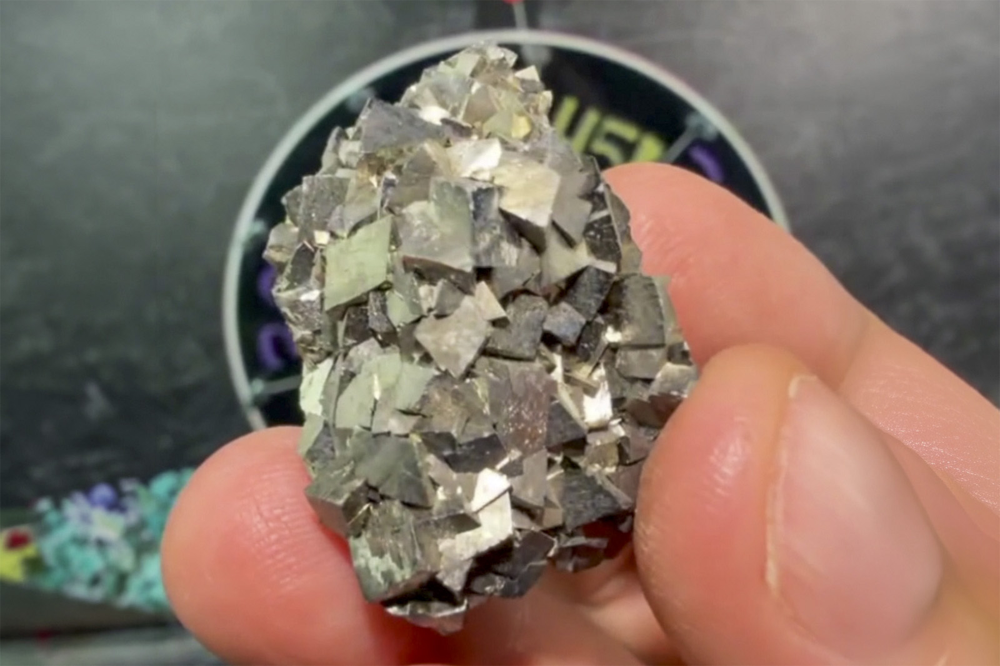

Arsenopyrite
"Arsenopyrite Plate"
II-10413
Noche Buena Mine, Mineral de Noche Buena, Melchor Ocampo Municipality, Zacatecas, Mexico
Purchased 5/23/2026 from MinCollect for $28.10
Core Collection • In Collection
Details
Storage Type: Flat
Storage Location: 000 None
Size class: Miniature (0)
Dimensions: 3.8 × 2.6 × 2.9 cm
Mass: 53 g
Luster: Average, Metallic